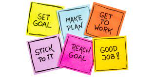
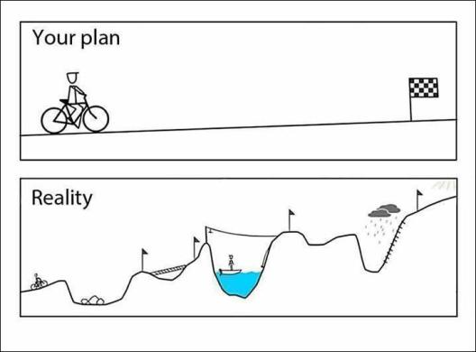

My Current Aspirations and How I plan on Achieving them
September 30, 2022 by Antonio
I am currently in my final year at the University of the West Indies and my aim is to become as Job ready as possible.
As mentioned in, My Summer 2022 Experience, I am coming fresh off an internship at CXC as a Software Developer where I
have gained valuable experience. Online schooling has been pretty rough on me and my GPA has taken a hit, but with face-to-face
classes being back I am exited for my final year and I will use this opportuninty learn as much as possible and
raise my GPA in the process.

The Courses I will be taking this year along with extra studying I will be doing will go a long way in
making me an overall better Software Developer and therefore job ready. Currently I am taking the Artifical Intelligence
and Dynamic Web Development 1 and next semseter I will be get another Intership, this time assigned by UWI, take on
Dynamic Web Devleopment 2, Formal Methods for Software Development and my Capstone Course. I am also practicing at least
4 days a week on Leet Code to keep my knowleged gained on Algorithms and Data Structres sharp and get myself
"Coding Interview Ready" and thus one step closer to being Job Ready.
My Summer 2022 Experience
September 29, 2022 by Antonio
My Summer had it Ups and Downs so here is a quick summary. This summer I had big plans to travel to the U.S.
visit some family and friends who live in New York, I also planned on working to purchase a new phone, laptop and gaming console.
I trained all of April and May as I was going to be a lifeguard so I had to be fit to swim. I already had a job and they made it
clear to me I could get my lifeguard certificate after I arrive. When I went to the embassy with this information the Consular did
not listen to everything I had to say and I did not take a look at the letter from my Sponsor or the Job itself and therefore I was told
to get a Certificate and return. So I spent the next few weeks looking for a way to get a certificate. When I finally got a lifeguard
certificate and sent it in with my passport as instructed. The Embassy made a decision to not issue any more J1 visas for the year. I was
honestly a little depressed because I planned for this all year I didnt know what to do with myself for a while.

Eventually I made the decision to focus on my preping for my future. I looked up languages to practice and decided to reinforce my
web development skills since I havent done a formal course with it as yet. I also made a plan for the rest of the year to get an internship
and practice on Leet Code. My friend knew my plan and he stumble on an internship opportuninty, he already had an internship so he gave this
opportuninty to me. I applied and was accepted by CXC Barbados and was working remotely in Jamaica. Working with the Dev team at CXC was a good
experience, I was reintroduced to SCRUM and worked mostly on the frontend. I did get one task to convert some already made function on the backend
from one language, VB, to C#. Oh and I forgot to mention I learnt C# while I was at this internship. They are intreseted in working with me on
a contractual basis and I have sent my schedule to them but my current priorty will still be school and Coding Interview Preparation.